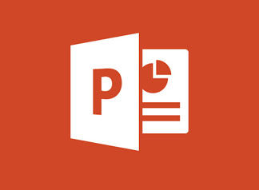

Microsoft Office suits
Microsoft Office Suite, also known as Microsoft 365, is one of the most widely used computer software packages. More than one million companies from around the world use Microsoft 365, which includes applications like Word, Excel,
PowerPoint, and Outlook. No matter what Industry you work in, chances are you’ll use at least one of these apps on a regular basis. If you want a transferable skill that also makes you marketable to employers, take the time to learn the full
suite. It will help you do your job more efficiently, be a better employee, and make you feel like you’re a regular technological wizard.
Here are the reasons you need to know Microsoft 365:
You’ll Use Microsoft Office in Any Job
No matter where you work, you’ll probably come across Microsoft 365. The Microsoft Office Suite is so common that there are versions compatible with both Windows and iOS. Once you
learn how to navigate the suite, you’ll have a skill that you’ll be able to take with you to any job in almost any industry.
Microsoft Applications Continue to Evolve
Bill Gates announced the debut of the Microsoft Office Suite back in 1988, and the software has continued to evolve ever since. Now the suite includes applications like OneNote,
Publisher, Access, and Teams—and who knows what applications may be introduced in the future. What does this mean for you? That now is a great time to learn how to use Microsoft 365! Once you develop your Suite skills, you’ll be able to keep
up with the added features and updates. And you’ll also feel more comfortable with what comes down the line when Microsoft rolls out something new.
Microsoft Office Helps You Communicate with Co-Workers
Microsoft offers a variety of communication tools that improve collaboration with your co-workers. Outlook is its email service and is commonly used by businesses to
send emails and schedule meetings. Over the past year, many businesses also started using Teams, which offers an instant messaging chat feature as well as video conferencing tools. It also allows team members to share and co-author documents
with each other.
Microsoft Tools Enhance Productivity and Collaboration
Because of the tools that Microsoft 365 offers, you no longer have to draw a graph or write out a memo by hand. You can enter data into Excel and it will create a sleek-looking graph for you. You can use a Word or Publisher template to create
a professional report, or a PowerPoint template to create a presentation. You can also make edits, track changes, add notes, and share files directly from the apps for easier collaboration.
Office applications
Microsoft Word
Microsoft Word is a full-featured word processing program for Windows and Mac operating systems. See more on Word with Microsoft 365

Microsoft Excel
Microsoft Excel is a spreadsheet program that features calculation, graphic tools, pivot tables, and macro programming language support for Windows and Mac operating systems. See more
on Excel with Microsoft 365
Microsoft PowerPoint
Microsoft PowerPoint is a presentation program for Windows and Mac operating systems. See more on PowerPoint with Microsoft 365
